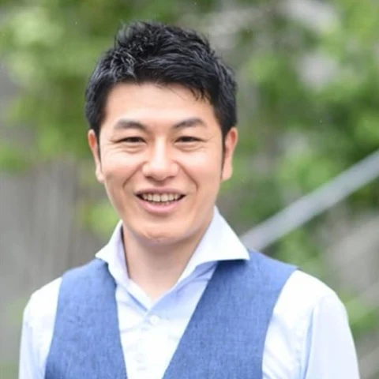

返信メール
- 渡す文面
- 金曜日の納品は可能ですか？
- AI秘書の案
- 納期は現在確認中です。確認が取れ次第、ご連絡します。
- 返信前に確認
- 納期を約束してよいか
使い方を詳しく読む
返事の文章を、一から考える負担を軽くする
相手のメールと、自分が伝えたい条件を示して、返信の下書きを頼む。
文章の長さや言い方を調整し、確認してから本人が送信します。
価格や納期など、まだ決まっていない内容を勝手に約束させず、不明点は確認事項にする使い方です。
経営者のための個別導入サポート
AI秘書導入サービス
いつもの仕事を一つ、あなたのパソコンで。
認定パートナーと一緒に、自社向けの設定から
依頼・確認の練習まで進めます。
事前に利用環境を確認します。3時間は進行の目安です。
「カタログは新版に。木曜までに見積もり。訪問日は先方から連絡待ち」
社長が元のメモと見比べて、仕事に使います。
LINEの依頼、メールの返信、
請求書の取りまとめ。
今日も手作業で抱えている仕事に、
あなたの会社のことを教えた
「AI秘書」という選択を。
ChatGPTで、分からないことを調べる。
文章のアイデアを出してもらう。
気になったニュースについて質問する。
「AIは便利だ」と感じている。
それでも、仕事が一段落したあとに残っている事務は、自分の手で片づけている。
そんなことはありませんか。
取引先やスタッフから、次々と届くLINE。
依頼、変更の連絡、確認してほしいこと。
その場で読んではいても、あとで一覧にまとめようとすると、もう一度やり取りをさかのぼる必要がある。
「この話、どこに書いてあったかな」と探しながら、メモや表へ転記していく。
「見積書をお願いします」
「送付先は本社です」
「金曜までに届きますか？」
届いた請求書を開く。
取引先名、金額、支払期限を確かめ、一覧へ入力する。
途中で電話が入れば、どこまで終えたかを確認してから再開する。
取引先へのメールも、打ち合わせのメモも残っている。
今日やっておきたい仕事を終えるころには、もう次の予定が迫っている。
AIに相談することは増えた。
でも、日々の仕事の進め方は、まだ大きく変わっていない。
「この取りまとめも、手伝ってもらえないだろうか」
そう感じる仕事を、一つ思い浮かべてみてください。
例えば、必要なメッセージを自分で選び、AIに渡す。
「依頼されたこと、期限、確認が必要なことに分けて」と頼む。
出てきた一覧を、元のメッセージと照らし合わせる。
足りない項目を加え、分からないことは確認事項として残す。
最初から一人で書き始める作業の一部を、AIに手伝ってもらう使い方です。
返信したいメールなら、相手に伝える条件を示し、下書きを頼む。
打ち合わせのメモなら、決定事項と次にやることを整理してもらう。
「ここは短く」
「この約束は、先方に確認してから返事をする形にして」
そうやって修正し、最後は自分で確かめる。
一度だけ便利な答えが出ることから、普段の仕事の中で使うことへ。
会社の事情と、仕事の進め方を伝えながら、繰り返し頼める形を整えていく。
そのために、最初は何をすればよいのでしょうか。
AIの使い方を検索すると、いろいろな名前や機能が出てきます。
動画を見れば、仕事が一気に進んでいるようにも見える。
ところが、自分のパソコンで試そうとすると、分からないことが出てきます。
会社の情報は、どこに入れるのか。
どの資料なら渡してよいのか。
何と頼めば、欲しい形で返ってくるのか。
Claude Codeという名前を知っていても、導入から実際の仕事までの間には、いくつもの確認があります。
業種も、取引先も、使っている書式も違う。
動画の操作をまねただけでは、自分の仕事に合うところまで届かないこともあります。
「動いた」と「自分の仕事で使える」の間を、一つずつ埋めていく必要があるのです。
便利そうな使い方を見つけて、あとで試そうと保存する。
そのまま本業が忙しくなり、見返せていない。
試してはみたものの、欲しかった文章と少し違う。
直し方を調べるうちに、「もう自分でやった方が早い」と手作業へ戻る。
もし、そんな経験があっても、そこで終わりにする必要はありません。
実際に返信したいメール。
整理したい打ち合わせのメモ。
抜けがないか確かめたい、今週のタスク。
自分の題材なら、何が足りないかを判断できます。
「うちでは、この言い方はしない」
「期限が書かれていないものは、確認する項目にしてほしい」
その気づきを設定や頼み方へ戻して、もう一度試す。
うまくいかなかった経験を、仕事に合う形へ調整する材料として使っていきましょう。
新しいツールを覚えたい気持ちはある。
でも、お客様への返事も、スタッフからの相談も、待ってはくれない。
まとまった時間を取ろうと思っても、その前に片づけたい仕事が増えていく。
操作の説明を探す。
自分の画面と見比べる。
違う表示が出たら、また検索する。
一つずつは小さな作業でも、途中で止まるたびに、集中し直す時間が必要です。
年齢だけで、できる・できないが決まるわけではありません。
会社の仕事を知っているあなたが、どこから始め、何を確かめればよいか。
その道筋が見えることが大切です。
今日のメッセージを整理したら、明日も新しい連絡が届く。
今月の請求書をまとめたら、来月も取りまとめの時期がやってくる。
一度片づけた仕事でも、進め方を変えなければ、次も同じように手を動かすことになります。
新しい提案を考える。
取引先へ、もう少し丁寧に話を聞く。
スタッフと仕事の進め方を相談する。
本当は時間を取りたいことがあっても、目の前の取りまとめが優先になる。
その積み重ねが気になっているなら、今の仕事の中から見直せるものを探す時期かもしれません。
すべてを一度に変える必要はありません。
まず、次も繰り返す仕事を一つ選ぶことから始められます。
お客様ごとの事情が分かる。
どの約束を守るべきか、どこを確認すべきかが分かる。
それは、会社を続けてきたあなたが持っている情報です。
AIを使うために、その経験を捨てて、新しい専門用語だけを覚え直す必要はありません。
誰に、何を、どんな方針で伝えるのか。
どんな一覧なら、あとで自分が判断しやすいのか。
その情報と手順をAIへ渡し、出てきた結果を確かめる。
仕事の背景が分かるあなた自身が、修正の方向を伝える。
AIを、自社の仕事を手伝う相手として使い始める入口は、そこにあります。
では、実際にどんな仕事から始められるのか、具体的に見ていきましょう。
相手のメールと、自分が伝えたい条件を示して、返信の下書きを頼む。
文章の長さや言い方を調整し、確認してから本人が送信します。
価格や納期など、まだ決まっていない内容を勝手に約束させず、不明点は確認事項にする使い方です。
打ち合わせで残したメモを、決まったこと、未決事項、次にやることへ整理する。
担当者や期限が分からなければ、要確認として残します。
話を聞いたあと、共有用の文章を作るところを手伝ってもらいます。
今日やること、今週の締切、返事待ちの用件を書き出し、優先順位の案を頼む。
急な仕事が入ったら、何を先にするかを見直す。
予定をどう動かすか、何を優先するかは、あなたが判断します。
日々の文章や情報整理の一部から始め、使い方と確認の仕方を身につけていきます。
AIコンサルタント養成講座 主催者
株式会社イレブンワン 代表取締役
1999年に独立。対面営業で事業を続け、コンサルタントの養成にも10年以上取り組んできました。2024年からはClaudeに特化したAIの仕事に取り組んでいます。

AIコンサルタント養成講座 主催者
株式会社ザ・リード 代表
片岡守とともに、AIコンサルタント養成講座を主催。本講座を母体として、経営者が自社の仕事でAIを使い始めるための導入サービスを提供します。
本サービスは、片岡守・田中祐一が主催するAIコンサルタント養成講座が提供する、共通の導入サービスです。
大切にするのは、会社の事情を聞き、最初に扱う仕事を絞り、ご本人が操作して確かめること。
設定されたファイルがあるかだけでなく、何を頼み、どこを確認し、違ったときにどう直すかまで扱います。
実際の導入は、AIコンサルタント養成講座の認定パートナーが個別に支援します。
担当する認定パートナーは、個別にご案内させていただきます。
片岡守・田中祐一は講座の主催者です。個別の導入サポートは、認定パートナーが担当します。
Claude Codeを知ったあと、導入や初期設定で止まってしまう。
設定ができても、実際の仕事での頼み方が分からない。
そこで必要になるのが、会社情報の整理から、実際の題材で試すところまでを一緒に進める支援です。
会社全体の仕事を、最初から全部任せようとはしません。
まずは、本人が結果を確かめられる仕事を一つ選びます。
背景を伝え、仕事の手順を設定し、実際に頼む。
出てきた結果を本人が確認して、必要な修正を加える。
この一連の流れを体験できるようにまとめたのが、次にご紹介するサービスです。
Claude Codeの導入・初期設定から、仕事での使い方まで。
あなたのパソコンで、コンサルタントと一緒に進める個別導入サービスです。
所要時間の目安は、約3時間です。
事前に、PC環境と必要なアカウントを確認します。
当日は、利用するアプリ、仕事をするフォルダ、起動の手順を一緒に確かめます。
事業、商品・サービス、主な顧客、文章の好みを整理します。
さらに、仕事を頼む際のルールと、本人が確認することを設定します。
仕事の手順と出力の形をまとめた「スキル」を設定します。
メール返信下書き、打ち合わせメモ整理、タスク整理を基本に、担当コンサルタントと会社に合う形へ調整します。
実際の題材で、依頼、確認、修正を練習します。
別の題材でもう一度試し、次に使うときの開き方を確認します。
3時間は進行の目安です。事前の準備や環境、取り組む仕事によって進み方は異なります。
今回の標準範囲は、Claude Codeの導入、AI秘書の設定、文章・メモ・タスクの整理と実務練習です。
LINEの自動取得・自動返信、請求書の大量読み取りや会計ソフト連携は含みません。
LINEや請求書の取りまとめで困っている場合も、業務全体の自動化を前提にせず、まずは文章や情報を整理する一つの仕事から取り組みます。
会社の情報、AI秘書の役割、仕事のルール。
当日調整した内容を、本人の環境へ保存します。
導入した業務スキルと、実際の題材で使った頼み方を残します。
どんな入力をして、何を修正したかを振り返れるようにします。
どのアプリを開き、どのフォルダを選び、どこへ依頼を入力するのか。
当日、一緒に確認した手順をまとめてお渡しします。
いずれも、導入後に使い始めるためのサービス本体の内容です。
手元の設定と手順を見ながら、次の仕事でも試していただけます。
アプリの起動や入力から確認します。
プログラミングの経験を前提にしたサービスではありません。
どこで分からなくなるかを担当者へ伝えながら、ご自身でも操作して進めていただきます。
OS、メモリ、アプリの導入権限、ネット接続などを事前に確認します。
「パソコンなら何でも使える」というお約束ではありません。
会社の管理端末の場合は、利用やインストールの許可も確認してください。
AIが作るのは、下書きや整理の案です。
お客様への約束、支払い、日程の確定など、大切な判断は本人が行います。
当日は、何を頼めるかと、どこを確認するかを一緒に扱います。
個別システムの開発や、会社全体の自動化を完成させるサービスではありません。
約3時間を目安に、この流れを担当コンサルタントと進めます。
会社の情報をどう渡すか。
最初にどの仕事を選ぶか。
違う答えが出たら、どう直すか。
本サービスの料金には、Claude Codeの導入支援、自社に合わせた初期設定、実務での操作練習を含みます。
経営者のためのAI秘書導入サービス
Claudeの有料プランなど、AIサービスの利用に必要な料金は別途ご負担いただきます。
自分で資料を探しながら導入を進める方法もあります。
その場合は、自分の環境に合う手順を調べ、設定と動作を確かめていく必要があります。
このサービスでは、その最初の工程を担当者と進めます。
会社の仕事を説明し、実際に操作し、その場で分からない点を確認できることが提供内容です。
料金を検討するときは、「自分は何を頼みたいのか」も合わせて考えてみてください。
返信の下書き、打ち合わせの整理、タスクの確認。
翌日も繰り返す仕事があるなら、それを最初の題材にできます。
49,800円＋税に加え、AIサービスの利用料が必要です。
導入後にどれだけ時間が減るかは、扱う仕事や使い方によって異なります。
自分が使う仕事と、別途かかる利用料まで含めて、ご検討ください。
仕事がすべて片づく日を待っていると、新しい依頼や確認が入ってきます。
今の仕事の中で、何を一つ試したいか。
まずは、それを決めるところから始めてみてください。
本サービスは共通の提供内容でご案内します。
お申し込み後、導入を担当する認定パートナーを個別にご案内します。
日々繰り返している仕事を一つ選び、導入と使い方を一緒に整えていきましょう。
49,800円＋税／約3時間の個別導入
導入を担当する認定パートナーを、個別にご案内します。
AIサービスの利用料は別途必要です。
今日のLINEを整理しても、明日には新しい連絡が来る。
請求書の取りまとめが終わっても、次の締め日がやってくる。
そのたびに「いつかやり方を変えたい」と感じているなら、仕事の名前だけでも書き出してみてください。
全部を任せる計画を先に作る必要はありません。
まず、どの作業のどの部分で手が止まるのかを、はっきりさせることから始められます。
実際に依頼を出すと、欲しい文章の長さや、足りない条件が見えてきます。
結果を確かめて直す経験は、次に同じ仕事を頼むときの手がかりになります。
調べた情報を増やすことと合わせて、あなたの仕事で一度使ってみる時間を取ってください。
取引先の事情も、仕事の大切な約束も、あなたが知っています。
その背景を伝え、AIにどこを手伝ってもらうかを考える。
私たちは、その最初の導入と使い方を支援します。
「自分の仕事なら、こう頼めばよいのか」
そう確かめるための一歩を、一緒に進めていきましょう。
片岡守・田中祐一
49,800円＋税／約3時間の個別導入
導入を担当する認定パートナーを、個別にご案内します。